De un tiempo a esta parte los sobres que envía la caja de ahorros ( básicamente para avisar del saldo negativo ) llevan una especie de marca con tres flechas planas y dobladas , cada una de las cuales muere en la siguiente.
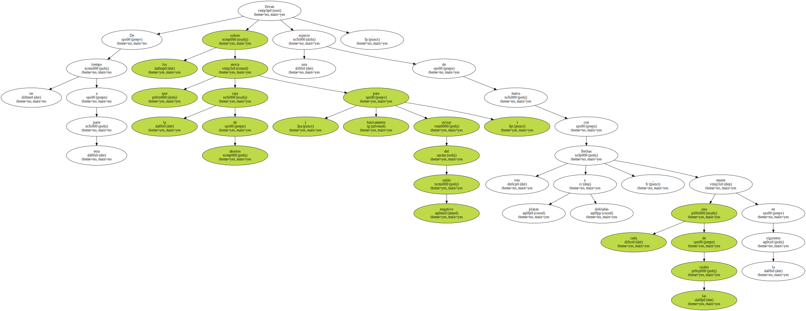Por si , a pesar del hábil grafismo , alguien no lo hubiese entendido , una leyenda escrita lo explica en palabras : Recycled ecological paper.
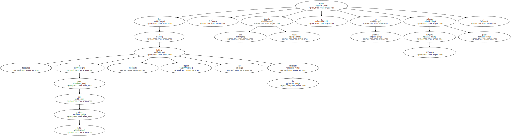A pesar de que la caja de ahorros en cuestión tiene su sede en el mismísimo centro de Barcelona , lo pone en inglés.
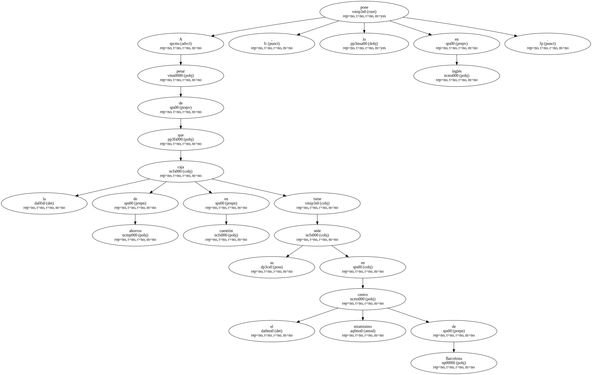Y eso está bien , qué caray.
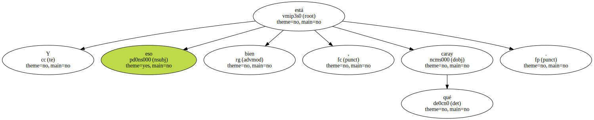- Por qué.
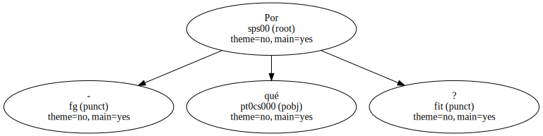Porque el inglés - - el latín de nuestros días - , según los amantes de la tortilla recalentada - debe ser un idioma que no rompe los ecosistemas lingüísticos.
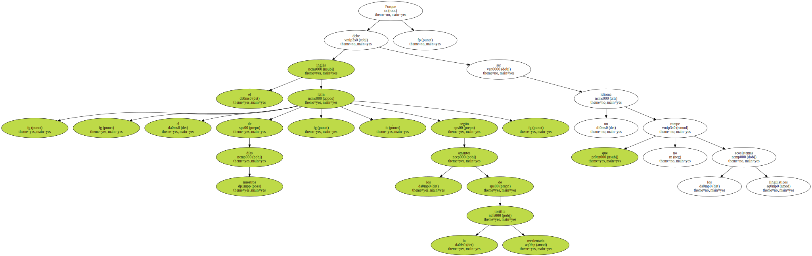Baste recordar que - sin ningún desdoro uno de los grupos ecológicos más activos se llama Greenpeace , tanto en Inglaterra como en Italia , en Brasil o en Gales.
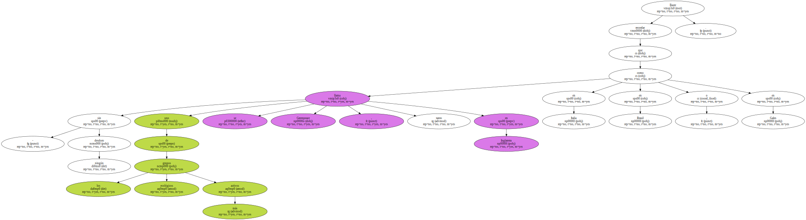A diferencia de otras organizaciones internacionales más sensibleras que , por respeto - dicen - , traducen su nombre allá donde van.

La Cruz Roja , por ejemplo , no se llama Red Cross en todas partes.
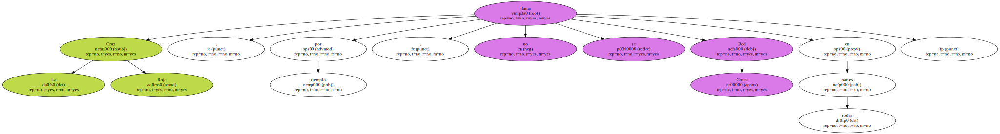Ganas de darse aires.
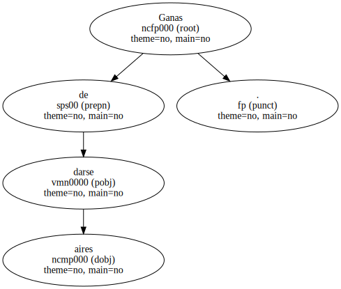Estábamos en lo de los sobres.
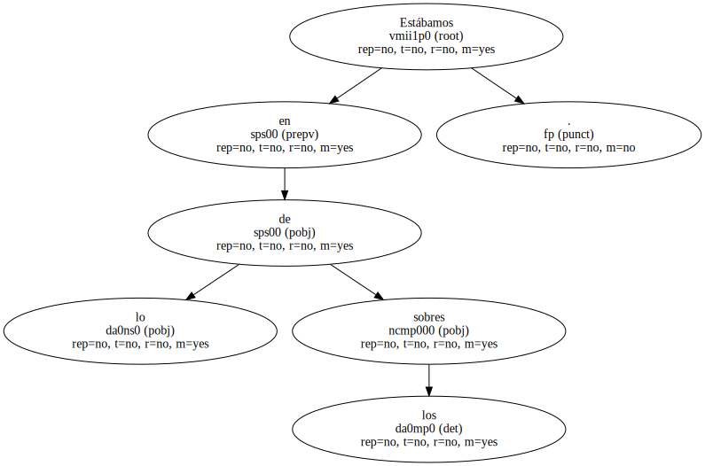Los sobres de la caja de ahorros son exactamente iguales a los que enviaban antes de añadirles lo de recycled ecological paper.
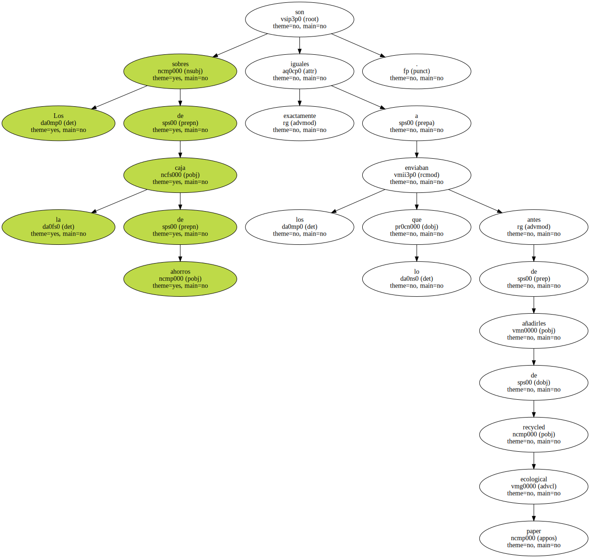- Qué necesidad había de ponerlo , al dorso de cada sobre , si el papel era tan recycled ecological antes como ahora.
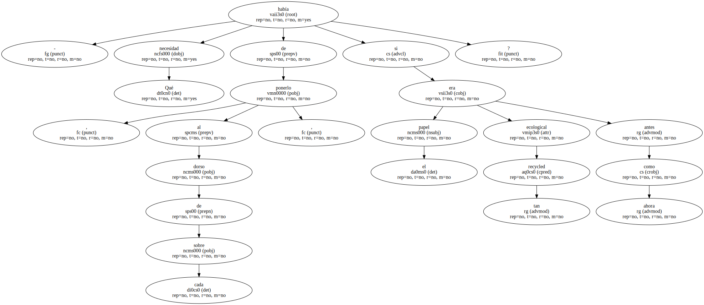Pues porque ponerlo no cuesta casi nada y , poniéndolo , los de la caja de ahorros creen quedar no como capitalistas chupasangres sino como respetuosos con el entorno.
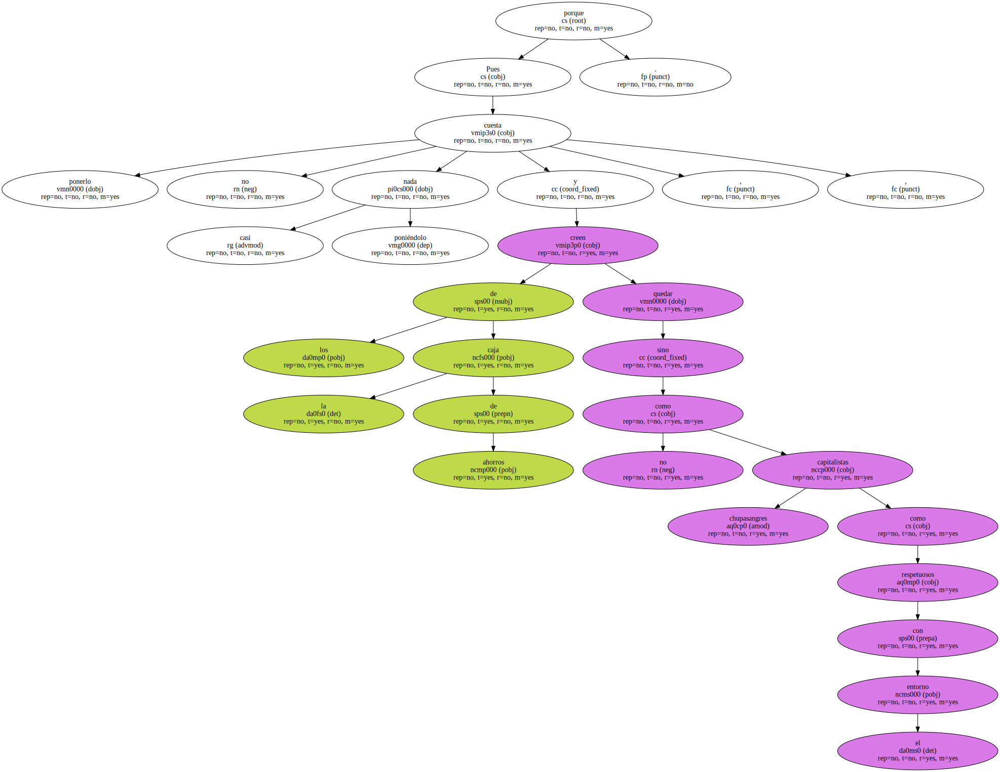Porque lo del reciclaje arrasa.
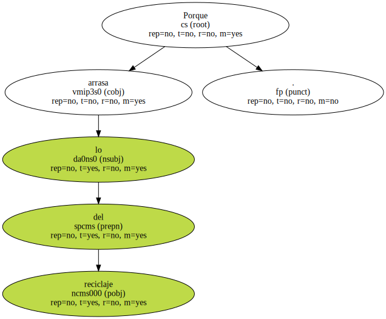